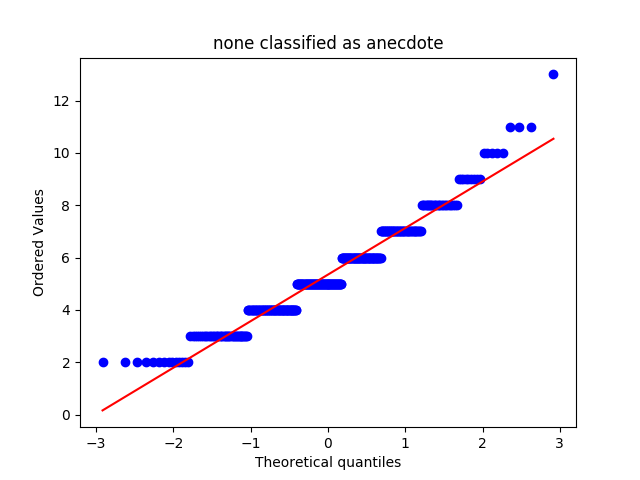
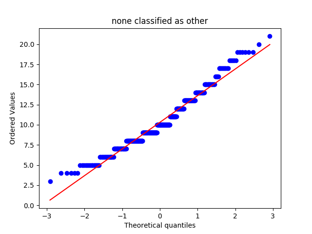
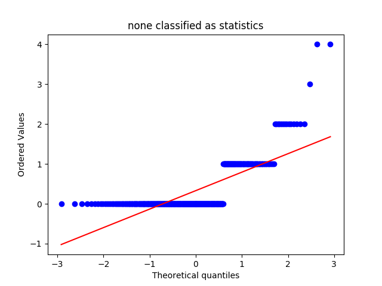
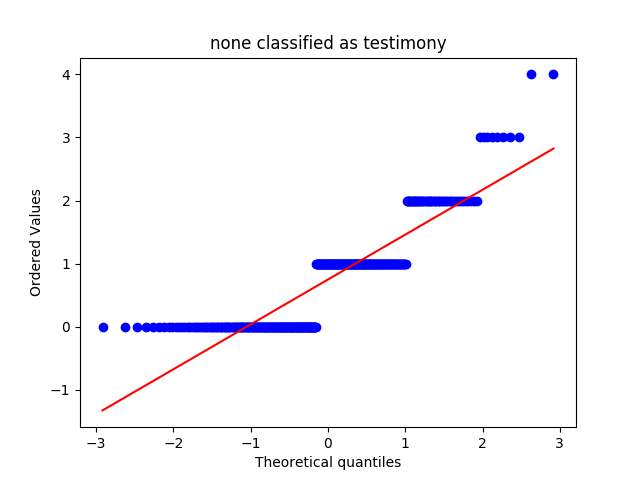
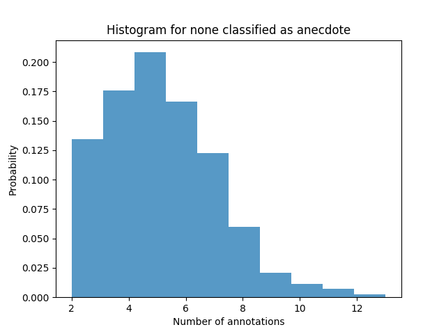
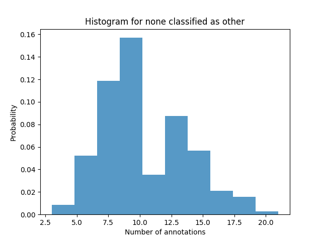
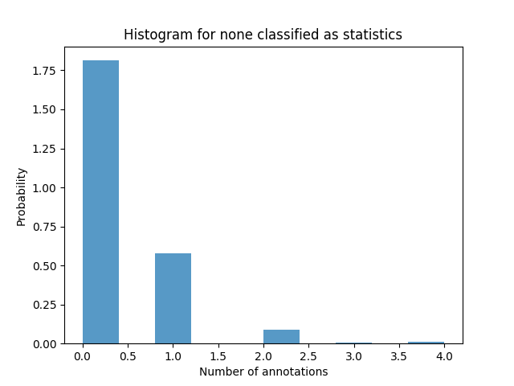
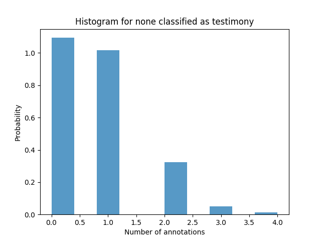
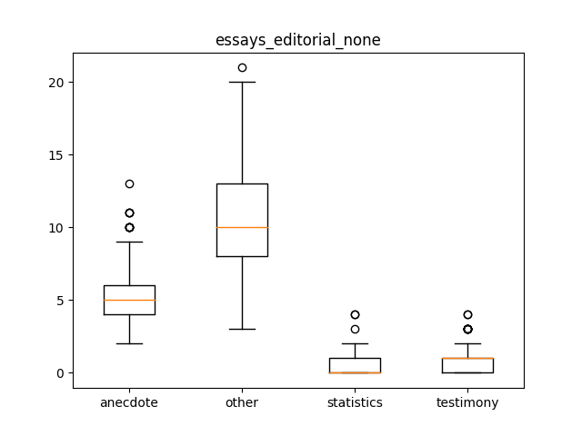

essays_editorial_none
Describing the Data-Set
Mean, Median and Standard Deviation
|
anecdote |
other |
statistics |
testimony |
| median |
5.000000 |
10.000000 |
0.000000 |
1.000000 |
| mean |
5.348601 |
10.307888 |
0.330789 |
0.748092 |
| std |
1.811219 |
3.347456 |
0.607413 |
0.794480 |
QQ Plots




Histograms




Box Plot(s)

Normalization Test
stat: 0.953146398067, p-val:7.61010698902e-10
Not Normally distributed for none classified as anecdote
stat: 0.965564668179, p-val:5.48509362375e-08
Not Normally distributed for none classified as other
stat: 0.5770226717, p-val:8.89627515934e-30
Not Normally distributed for none classified as statistics
stat: 0.791284680367, p-val:4.24164374555e-22
Not Normally distributed for none classified as testimony
Significancy Test
Using friedmann-test
Using friedmann-test
using stats.friedmanchisquare
chisq: 1089.69212219
p-value: 6.27122161448e-236
statistic: 2812.86192057
p-value: 1.11022302463e-16
chi2:1034.79160305
ranking[1.3447837150127226, 3.9211195928753182, 1.6603053435114503, 3.0737913486005088]
Post Hoc Analysis (holm_multitest):
------------------------------------------------------
Comparing: anecdote vs statistics
z_value: 18.7738703017
p_value: 0.0
adj_p_value: 0.0
--------------------------------------------------------------------------
Comparing: anecdote vs other
z_value: 9.20043975053
p_value: 0.0
adj_p_value: 0.0
--------------------------------------------------------------------------
Comparing: anecdote vs testimony
z_value: 15.347880725
p_value: 0.0
adj_p_value: 0.0
--------------------------------------------------------------------------
Comparing: statistics vs other
z_value: 27.9743100523
p_value: 0.0
adj_p_value: 0.0
--------------------------------------------------------------------------
Comparing: other vs testimony
z_value: 24.5483204755
p_value: 0.0
adj_p_value: 0.0
--------------------------------------------------------------------------
Comparing: statistics vs testimony
z_value: 3.42598957677
p_value: 0.000612563888765
adj_p_value: 0.000612563888765
--------------------------------------------------------------------------